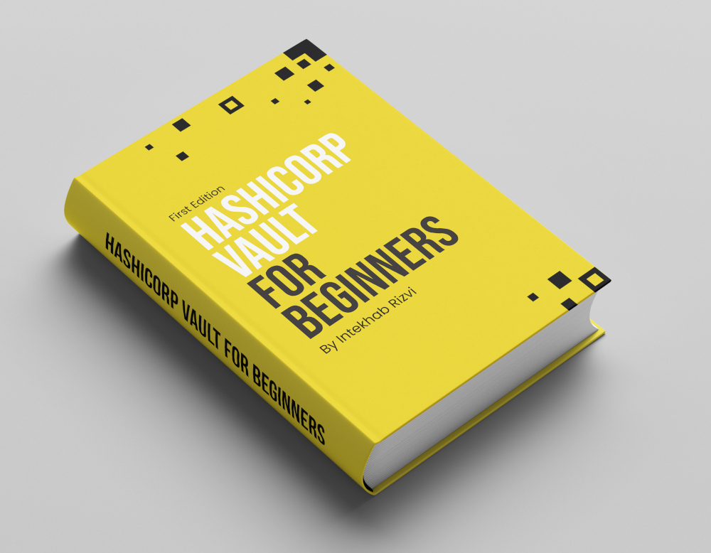

A practical, hands-on guide to mastering Hashicorp Vault without losing your sanity
Let’s be honest, Hashicorp Vault can feel like you’ve been dropped into a security maze with a map drawn by a cryptographer having a bad day. That’s why I wrote this book, so you can learn Vault quickly, painlessly, and confidently, even if you're just getting started.
Whether you're a developer, DevOps engineer, security pro, or someone who clicked “Yes” to managing secrets without knowing what you signed up for, this guide is for you.
Every single concept in the book is backed by real, working examples.
You’ll:
and all the commands and exercise files are available on GitHub repo, ready for you to clone and run.
| Chapter 1 | Introduction to Hashicorp Vault |
| Chapter 2 | Installing Vault Using Docker |
| Chapter 3 | Vault Initialization and Logging In |
| Chapter 4 | Understanding Shamir’s Secret Sharing and Rekeying Vault |
| Chapter 5 | Storing Your First Secret |
| Chapter 6 | KV v2 Versioned Secrets |
| Chapter 7 | Secrets Engine and Paths |
| Chapter 8 | Authentication Methods - Giving Others Access |
| Chapter 9 | Understanding Vault Policies |
| Chapter 10 | Policies in action |
| Chapter 11 | Accessing Vault using browser-based UI |
| Chapter 12 | Understanding Dynamic Secrets |
| Chapter 13 | Dynamic Secrets in Action |
| Chapter 14 | Fine-Tuning and Access Control on Dynamic Secrets |
| Chapter 15 | Leasing, TTL, and Vault’s Secret Lifecycle |
| Chapter 16 | Dynamic Secrets with PostgreSQL |
| Chapter 17 | Dynamic Secrets with MongoDB |
| Chapter 18 | Getting Started with the Vault API - Your First Step to Automation |
| Chapter 19 | AppRole Authentication Method – Vault Meets Automation |
| Chapter 20 | Vault Agent and Templating – Bridging the Gap for Legacy Apps |
| Chapter 21 | Transit Secrets Engine – Encryption as a Service |
| Chapter 22 | Understanding Vault Audit Devices |
| Chapter 23 | Revoking and Regenerating the Root Token |
| Chapter 24 | Production deployment of Hashicorp Vault on Ubuntu LTS |
| Chapter 25 | Production Deployment of Hashicorp Vault Using Docker |
| Chapter 26 | Production Hardening Guide |
| Chapter 27 | Creating PGP Keys for Vault Security |